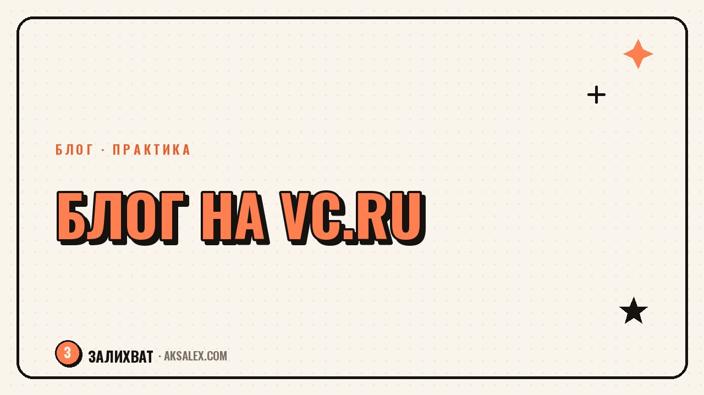

Как вести блог на VC.ru с нейросетями: с чего начать

VC.ru - площадка для тех, кто пишет про бизнес, технологии и свой опыт в деле, а не только про лайфстайл. Аудитория здесь требовательная: любит конкретику, разборы и цифры, не любит пустые мотивационные посты и очевидную рекламу в лоб. Завести блог тут можно без команды и бюджета на продвижение, но придётся научиться писать по-другому, чем в Instagram или Telegram. Разберём, как использовать нейросети, чтобы начать писать на VC.ru быстрее и без лишних мучений с форматом.
Чем VC.ru отличается от других площадок для блога
Главное отличие - здесь читают не ради развлечения, а ради пользы и инсайта. Статья должна отвечать на вопрос 'что я узнал нового и что могу применить', а не только рассказывать историю. Это значит, что хук в заголовке работает иначе: не эмоциональный крючок, а конкретное обещание пользы - цифра, результат, разбор ошибки.
Второе отличие - формат. На VC.ru заходят длинные тексты с подзаголовками, списками и примерами, в отличие от коротких постов в соцсетях. Если ты привык писать короткие подписи к Reels, переход на VC.ru потребует перестройки: учиться держать мысль на протяжении нескольких абзацев и подкреплять её фактами.
Форматы, которые заходят на VC.ru
- Разбор кейса - что сделал, что получилось и что не получилось, с конкретными шагами
- Личный опыт в бизнесе или профессии с честными цифрами
- Разбор инструмента или сервиса с примерами использования
- Подборка с личной оценкой каждого пункта, а не сухой список без комментариев
Как нейросеть помогает готовить текст для VC.ru
Начинающему автору сложнее всего не придумать тему, а структурировать мысли в формат, который примут редакторы площадки и прочитают читатели. Нейросеть хорошо справляется именно с этим: ты даёшь ей сырой черновик - голосовую заметку, обрывки мыслей, набросок - а она помогает собрать структуру с подзаголовками и логичным порядком блоков.
Разбор по шагам
- Записываешь голосом или текстом свои мысли без оглядки на структуру - сплошным потоком
- Просишь нейросеть расшифровать и сгруппировать мысли по смысловым блокам
- Даёшь модели 3-4 примера хорошо принятых постов на VC.ru (без копирования, только как образец структуры) и просишь предложить похожий скелет
- Переписываешь итоговый текст своими словами - важно сохранить личный опыт и голос, а не отдать нейросети финальную формулировку
- Проверяешь факты и цифры, которые упомянул - аудитория VC.ru быстро замечает неточности в комментариях
Нейросеть ускоряет сборку структуры и черновика, но не заменяет личный опыт и голос автора. На VC.ru обезличенный текст, написанный моделью от начала до конца, читатели чувствуют почти сразу и реагируют холодно.
Типичные ошибки новичков на VC.ru
Самая частая ошибка - приходить с рекламным текстом под видом статьи. Площадка и аудитория быстро считывают прямую продажу без пользы и реагируют негативно в комментариях. Работающий подход - сначала дать реальную пользу (разбор, кейс, инструкцию), а свой продукт или услугу упомянуть вскользь, как часть личного опыта, а не как цель текста.
Вторая ошибка - писать слишком общими фразами без конкретики. 'Нейросети меняют бизнес' - заголовок, который не цепляет здесь никого, потому что не несёт конкретной пользы. 'Как я сократил время на отчёты в два раза с помощью нейросети - разбор по шагам' работает лучше, потому что обещает конкретный результат и метод.
Сравнение подходов к ведению блога на VC.ru
Есть разные стратегии ведения блога на площадке, и у каждой свои плюсы и ограничения по времени и усилиям.
| Подход | Что это | Когда подходит |
|---|---|---|
| Разборы кейсов из своей практики | Детальный разбор одного проекта с цифрами | Когда есть завершённые проекты с понятным результатом |
| Экспертные гайды по теме | Пошаговая инструкция по узкой теме | Когда хочешь закрепиться как эксперт в нише |
| Короткие заметки-наблюдения | Небольшие посты с мыслью или наблюдением | Когда нет времени на большие статьи, но хочется присутствия |
| Обзоры инструментов и сервисов | Сравнение сервисов с личным опытом использования | Когда регулярно тестируешь новые инструменты в работе |
С чего начать, если никогда не писал на VC.ru
Не начинай с попытки написать идеальный первый пост - лучше взять одну конкретную ситуацию из своей практики за последний месяц и разобрать её честно: что было, что сделал, что получилось. Это снижает давление перфекционизма и даёт реальный, а не придуманный материал.
Перед публикацией почитай ленту площадки минут двадцать - посмотри, какие заголовки и форматы собирают комментарии в твоей теме. Это не для копирования, а чтобы настроиться на тон и уровень конкретики, который здесь ожидают.
Частые вопросы
Можно ли вести блог на VC.ru без опыта в бизнесе?
Да, если у тебя есть личный опыт в любой профессии или деле, который можно разобрать с конкретикой и цифрами. Площадка принимает не только истории про бизнес, но и разборы профессионального опыта в любой сфере.
Как написать первый пост на VC.ru с помощью нейросети?
Начни с голосовой заметки или черновика своих мыслей без оглядки на структуру, а нейросеть поможет собрать из этого скелет с подзаголовками. Финальный текст перепиши своими словами, чтобы сохранить личный голос и конкретику.
Почему тексты, написанные нейросетью целиком, плохо работают на VC.ru?
Аудитория площадки быстро замечает обезличенный текст без личного опыта и реагирует холодно или критично в комментариях. Нейросеть лучше использовать для структуры и черновика, а не для финальной формулировки без твоей правки.
Какие темы лучше всего заходят на VC.ru новичку?
Лучше всего работают разборы конкретных кейсов из своей практики с честными цифрами и подробностями о том, что получилось и что не получилось. Общие мотивационные посты без конкретики здесь обычно не находят отклика.
Можно ли рекламировать свой продукт в посте на VC.ru?
Прямая реклама без пользы в тексте воспринимается аудиторией негативно. Рабочий подход - сначала дать реальную пользу в виде разбора или инструкции, а продукт упомянуть вскользь как часть личного опыта.
Раз тема оказалась полезной, вот что почитать следующим. Если скучно делать одно и то же каждый день - вот как искать дело жизни иначе.
Читать статью →а не вручную